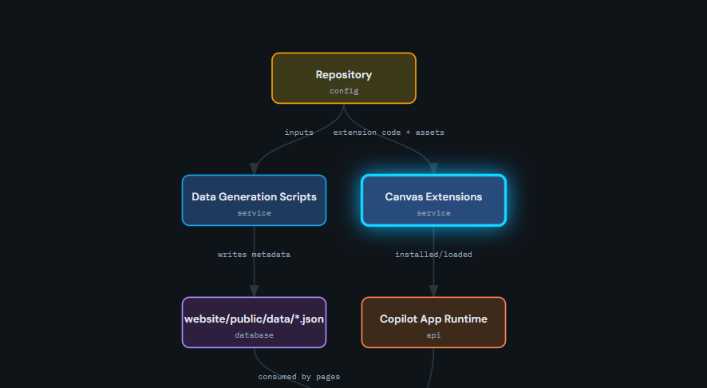

Turning what exists into something another person can read: Word deliverables, draw.io
architecture pictures, and agents that discover a stack before describing it.
This chapter covers authoring output, not the Markdown house style. For the rules that
govern .md files in this repo, see the instructions listed in
repo assets.
project-documenter
project-documenter@1.0.0
Generates professional project documentation as Markdown, draw.io
diagrams, exported PNGs, and a formatted Word document, after first discovering the
project's actual technology stack and code structure.
Producing a shareable .docx overview of a module for someone who will
never open the repository.
Generating an architecture diagram of the twelve-module layout without hand-drawing
boxes for an hour.
Refreshing existing documentation after a refactor so the diagrams match the code
rather than the intent.
Prerequisites
None beyond the plugin. The agent discovers the stack itself rather than accepting a
description.
Boundaries
Produces deliverables; it does not enforce this repo's Markdown style rules or the
module Documentation/ folder contract.
Use the project-documenter agent on Module_ShipRec_Tools. Discover the actual
stack from the project file and the code, then produce an overview document, a draw.io
diagram of the module's service and DAO layers, and a Word version I can circulate. Do
not invent components that are not in the source.
drawio
project-documenter@1.0.0
Creates .drawio diagram files and exports them to PNG,
SVG, or PDF with the diagram XML embedded in the output so the file stays editable.
Drawing the View to ViewModel to Service to DAO flow for a module and exporting it as
PNG for a spec.
Keeping an exported diagram editable by preserving the XML inside the image.
Producing an SVG for print without shipping a heavyweight toolchain.
Boundaries
Draws what you describe. It does not read the codebase to decide the boxes for you;
pair it with project-documenter when the diagram must reflect real types.
Use the drawio skill to diagram the MVVM flow for Module_Dunnage: View, ViewModel,
Service, DAO, MySQL. Export a PNG with editable XML embedded, and put it in
docs/dunnage/architecture.png.
md-to-docx
project-documenter@1.0.0
Converts Markdown files into a professionally formatted Word
document with embedded PNG images, using pure JavaScript and no external tools.
Handing a spec to a reviewer who works in Word rather than a Markdown viewer.
Converting the module Documentation/ set into one bound document for a
release review.
Shipping a document with diagrams embedded, from a repository that has no Office
automation installed.
Boundaries
Converts; it does not restructure prose. Headings and lists survive, but content that
only exists as HTML inside a Markdown file is out of scope.
Use the md-to-docx skill to convert specs/003-agent-toolkit-book/spec.md plus its
plan.md into one Word document, with the four preview images from
docs/agent-toolkit-book/assets/previews embedded in place.
diagram-viewer
diagram-viewer@1.0.2
Renders an interactive diagram beside the chat where nodes can be
clicked to drill down, and the agent explains the selected node.
Exploring the twelve-module dependency map by clicking a module instead of reading a
static picture.
Walking a reviewer through the receiving workflow step by step in a canvas.
Checking whether a proposed change crosses a module boundary, by seeing the edges.
How to open
Ask for the diagram in chat; the canvas opens beside the conversation. It is a view,
not a generator, so the graph comes from what the agent supplies.
Boundaries
Reads nothing on its own and writes no files.

The canvas surface as installed.
Choosing between them. Reach for
project-documenter when you need the whole package and
drawio when you need one picture. Use md-to-docx only at the end,
once the Markdown is already correct, because the conversion is faithful to whatever it is
given, errors included.